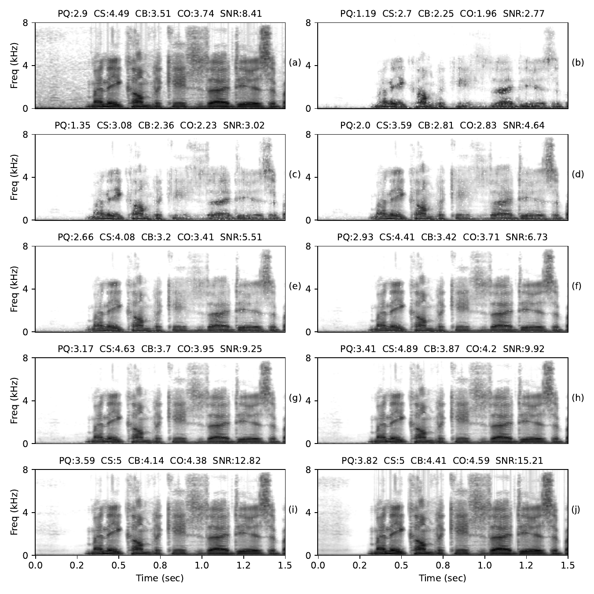
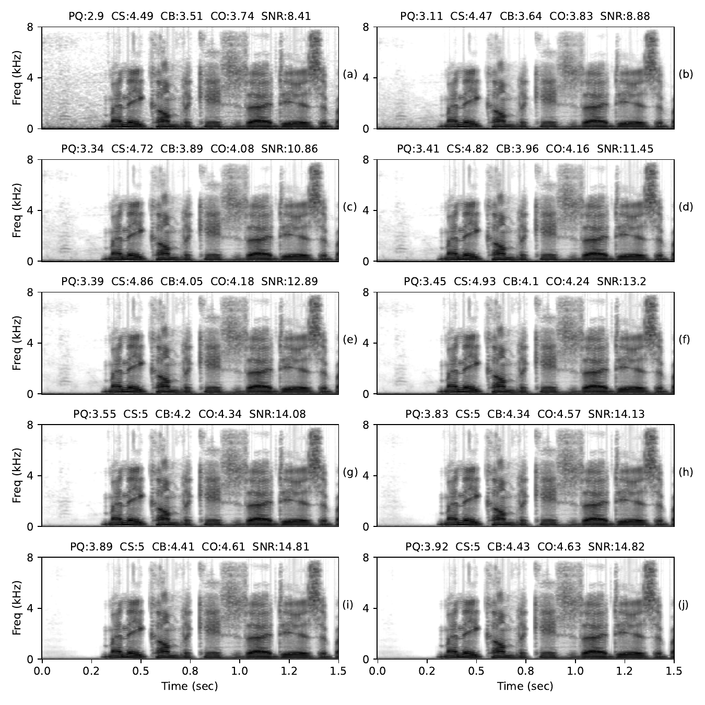

Baseline

Figure 1: Quality metrics of intermediate layer outputs of baseline model. (a) Noisy spectrogram, (b) Encoder output fed directly to the decoder, Time-conformers in left column (c,e,g,i), frequency-conformers in right column(d,f,h,j). PQ--PESQ, CS--CSIG, CB--CBAK, CO--COVL, SNR--SegSNR
TFG Mechanism

Figure 2: Quality metrics of intermediate layer outputs with TFG mechanism, for the same signal shown in Figure 1. (a) Noisy spectrogram, (b) Encoder output fed directly to the decoder, Time-conformers in left column (a,c,e,g), frequency-conformers in right column(b,d,f,h). PQ--PESQ, CS--CSIG, CB--CBAK, CO--COVL, SNR--SegSNR